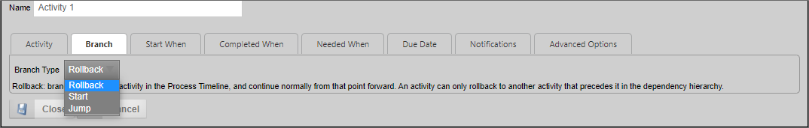

Enables an activity to jump or branch to another activity in the running Process Timeline. For Process Director v3.49 and above, the use of this Activity type should be replaced, in most cases, by the use of the Looping functionality available in the Parent activity type.
In addition to the common properties tabs that appear for all Timeline activities, the configuration settings below are unique to this activity type.

The Branch tab determines where the activity goes, as specified by the “Branch Type” dropdown. The Branch can either roll back to the activity on which it depends or start or jump to a new activity. Jumping to a new activity skips all the activities in between; they will not be started this process instance. Starting a new activity allows the steps in between to start as they normally would.
This dropdown control contains the following configuration options:
This dropdown contains a list of available Activities to which you may branch in the Timeline. The activities that appear in this list will depend on the location of this activity in the timeline, the Branch Type selected, and the activities that are in the critical path of the Process Timeline.
To view the documentation for other activity types, you can navigate to them using the Table of Contents displayed in the upper right corner of the page, or by using one of the links below.
User: This activity type assigns a task to a user or users, which must be completed to end the task.
Notify: This activity type sends email notifications to users who are not participants in the process.
Process: This activity type invokes a different process that will run as a separate, synchronous subprocess.
Script: This activity type enables you to invoke a custom script.
Custom Task: This activity type invokes a Custom Task to run when the activity starts.
Form Actions: This activity type enables you to manipulate the Form used for the process.
Parent: This activity type serves as a container for other activities and to create a looping segment in a Process Timeline.
End Process: This activity type enables you to conditionally end a process.
Wait: This activity type enables you to pause a Process Timeline.
Case: This activity type enables you to manipulate the Case instance that is associated with the Process Timeline.